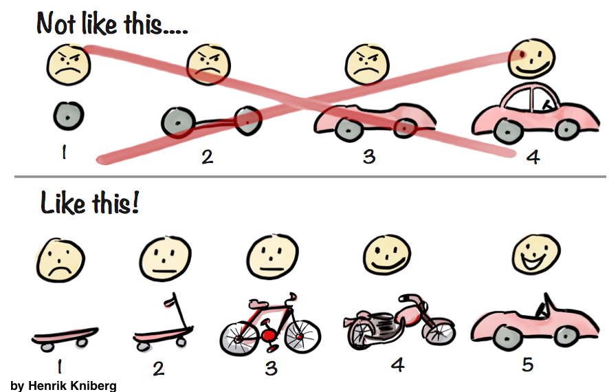

(Picture:
(Picture: This is a very common problem that every developer will eventually face at some point. Your boss or a client comes with a set of requirements and asks you to estimate how long it will take to implement them.
How to precisely (as possible) estimate the effort of development of a Web application? That’s a really tough question. People in the academia have being conducting research on that topic for at least the past 40 years, and yet we fail to get it right.
I wanted to write a little bit on that subject to try to highlight the challenges of making an accurate estimation and perhaps share some of my experience about it.

The Chaos Report 2015
Every year the Standish Group conducts a survey to investigate the cause of failure of software projects. In 2015, out of the 8,380 investigated projects, 16.2% (success) was delivered on-time and on-budget, 52.7% (challenged) faced challenges and was delivered over-budget and over the time estimate. The other 31.1% (impaired) was canceled at some point during the development cycle.
Check this numbers in relation to the time overruns of the original estimates, from the Chaos Report 2015:
Time Overruns
For the same combined challenged and impaired projects, over one-third also experienced time overruns of 200 to 300%. The average overrun is 222% of the original time estimate. For large companies, the average is 230%; for medium companies, the average is 202%; and for small companies, the average is 239%.
| Time Overruns | % of Responses |
|---|---|
| Under 20% | 13.9% |
| 21 - 50% | 18.3% |
| 51 - 100% | 20.0% |
| 101 - 200% | 35.5% |
| 201 - 400% | 11.2% |
| Over 400% | 1.1% |
Scary, right?
Now, why does that happen? Mainly because every estimation involves uncertainty. An estimation is different from the reality because of the uncertainties. Make no mistake, every estimation will fail.
The software domain is plagued by uncertainties: incomplete requirements, volatile requirements, incomplete understanding of the scope, human aspects, external factors, etc.
We can’t help ourselves, we are not very good on forecasting things we don’t know.
How Uncertainty Behaves
There is an important aspect on how the uncertainty behaves. And this can help us a lot when estimating the effort. Let’s get back to the Chaos Report’s numbers. Out of the 8,380 applications analyzed by the Standish Group, 16.2% of them was delivered on time (possibly some of them took less effort than expected), while 83.8% required more effort than expected (when some of them wasn’t even concluded).
To illustrate that phenomena, I will quote the article How Uncertainty Works published by Kevin Thompson:
There is more room, in a mathematical sense, for work to grow beyond expectation than to shrink below expectation.
Mathematically speaking, the effort the accomplish one task can’t go below zero hours. But in the other hand, it can grow…

Sorry for the silly joke. Anyway, check the example Kevin Thompson gave in his article:
Assume we estimate this work at three days. The actual time may be more than three days over this estimate, but cannot be more than three days under the estimate!
In mathematical terms, we cannot estimate a task as requiring “X plus or minus Y days,” because the estimate becomes meaningless if Y is greater than X. What we can do is replace the concept of an increment of uncertainty with that of an uncertainty factor, F. This means that we think that X is the most likely duration, but the range of values is between X divided by F, and X times F. For example, suppose we estimate “Paint Bedroom” at 3 days, with an uncertainty factor of 2.
The most likely case is 3 days.
The best case is 1.5 days, which is 1.5 days under the estimate.
The worst case is 6 days, which is 3 days over the estimate.
I think this simple example illustrates well the concept.
Besides that, still, why are we so bad at making estimations? When it comes to estimating the effort of software development, we are over-optimistic. This is just one of the cognitive bias that affect our work.
The Cognitive Bias in Software Engineering
Actually, I know very little about that subject. But the little I read about it made lots of sense for me. Some of my collegues at the university study this subject in great detail, and listening to one of their presentations last year was the first time I came across that subject. And I thought it was fascinating.
I grabbed the information below from a great presentation by Julia Clavien on Cognitive Bias in Software Development.
So, what’s a Cognitive Bias?
Cognitive Bias
Systematic errors in judgment and decision making common to all human beings.
– Daniel Kahneman
The Planning Fallacy
The tendency of individuals to display an optimism bias and underestimate the time and resource required to complete a project.
The Known Knowns, Known Unknowns and Unknown Unknowns
The plan is usually very different from the reality because of the difficulties to estimate what we don’t know, and even worse, to estimate things we don’t know we don’t know.
There are known knowns. These are things we know that we know. There are known unknowns. That is to say, there are things that we know we don’t know. But there are also unknown unknowns. There are things we don’t know we don’t know.
– Donald Rumsfeld
On the Wikipedia I found a very interesting citation of Jørgensen and Grimstad’s work, The Impact of Irrelevant and Misleading Information on Software Development Effort Estimates: A Randomized Controlled Field Experiment:
- It’s easy to estimate what you know.
- It’s hard to estimate what you know you don’t know. (known unknowns)
- It’s very hard to estimate things that you don’t know you don’t know. (unknown unknowns)
Minimizing the Problems
Let’s summarize what we have so far:
- Estimation is different from reality because of uncertainty;
- There is more room for work to grow beyond expectation than to shrink below expectation;
- We have the tendency to be over-optimistic when it comes to estimate;
- It’s hard to estimate what we don’t know.
It is all about uncertainty. We certainly can’t eliminate it, but sure thing we can reduce it.
Decompose the Problem
Decompose the tasks into smaller ones. Try to look at them in great detail. Think about the underlying implications of the implementation of a given requirement.
Let’s say we have a task to implement a Password reset functionality.
We can decompose this task into several smaller tasks, and then estimate the effort of the small tasks. Naturally, putting them all together would give us the overall estimation of the initial task.
- Create the HTML templates
- Generate a one-time-use password reset link
- Implement a view to process the password change request
- Create the password reset email template
- Add a re-captcha to prevent abuse
The challenge here is to keep the smaller tasks in a level of granularity that actually makes sense, there is no point in reducing the size below a level where the relative uncertainty does not improve.
As stated by Kevin Thompson, the important thing is to pick a granularity that (1) enables a tolerable level of uncertainty, and (2) produces a set of things to estimate that is small enough to be practical.
The Changing Requirements
It is what it is. That’s what requirements do. They change. All the time. If they don’t change during the development, they will during the usage.
There is only one circumstance where the requirements won’t change: It is when the software is no longer being used.
Now, repeat after me:
The requirements will change and I will not cry about that.
What we can do about it? Deliver fast. You certainly have at least heard about Scrum, Minimum Viable Product (MVP) or Agile Development before.
Break the whole project into small valuable deliverables. Get the client involved. Learn faster. The development of a software product should be dynamic.
Besides all the benefits of a MVP, it will enable a more accurate estimation, because you will be dealing with a small chunk of the whole problem, and you will also be learning faster about the requirements and the domain.

I know I’m deviating a little bit from the original subject of this article, but the point is: it is easier to give a better estimate when the scope is small.
Your client will always need an overall estimation. After all, they need to plan the schedule and the budget. Besides, there are many factors to take into account when planning a release: the time-to-market, the return on investment, the end-user needs, etc.
You can always give an overall estimation. But agree with the client that it’s an imperfect and error-prone estimation. Decompose the requirements into several small and valuable deliverables. Smaller scope means better estimate. After each interaction, each delivery, review the requirements with the client and update the overall estimation.
Without mentioning it will improve the client’s understanding of the software needs. Also, they will eventually get to know some of the technical challenges.
Despite all the effort you are putting to make things work, that’s how the client will perceive you and your work:
Haha! Got the monkey idea from Julia Clavien’s presentation on Cognitive Bias in Software Development.
It’s Not Only About Code
Sometimes when we are doing estimates, it is common that we forget to take into account the time to write documentation, unit tests, functional tests, and so on.
Bear in mind it is not only about code. And also important to note, the development estimate is different from a project estimate.
Cope With the Uncertainties
After reducing the level of uncertainty to a minimum practical level, it’s time to cope with the remaining uncertainty.
If it is a project with a real fixed scope, the client deeply understands what he wants to be done, ideally you already have some proof of concepts and prototypes – what you want to do is to add a buffer time to the schedule.
How much is enough depends. Depends on how big, what’s the complexity of the project, your experience, how familiar you are with the domain.
Ask developers about the time they will take to implement the features (T). Multiply it by 2.5. If it is a very complex algorithmic type project multiply it by 3.0.
In my experience that’s a pretty good approximation for total project time. Usually coding time is only 40% of total project time.
Nitin Bhide
Thursday, March 25, 2004
Reference: http://discuss.fogcreek.com/askjoel/default.asp?cmd=show&ixPost=4164
Now, if we compare with the data from Chaos Report 2015, where the average overrun is 222% of the original time estimate. The numbers suggested by Nitin Bhide are about right.
How’s a Django Application Different?
Well, depending on the effort estimation technique you are using, a Django application isn’t that different at all. For example, some agile estimating techniques use the concept of velocity. First you estimate the size of the features to be implemented. Then initially you try to guess the team’s velocity. After a first iteration of development, you are able to calculate the team’s velocity. Then the estimation of the remaining features/requirements are adjusted, based on the actual team’s velocity.
So this velocity concept will eventually be impacted by the team’s experience, the framework that’s being used (Django ir our case) and all other technologies being used in the development.
Nevertheless, I like to take a few factors into account when estimating the effort of the Django applications I develop. It is important to have a look in all the Python/Django Ecosystem to better understand what you can reuse, what can be integrated and what will need to be developed from scratch.
Using Built-in Django Apps
Take a look at the requirements list and first try to think of what can be used out-of-the-box? That is, you can simply use what the Django framework offers as it is.
Some examples are:
- Authentication system
- Login
- Logout
- Password reset
- Password strength checking
- Permissions
- User groups
- Flat pages app
- Store flat HTML pages in the database (and manage from Admin interface)
- Redirects app
- Store simple redirects in the database (and manage from Admin interface)
- Syndication feed framework
- RSS
- Atom
- Sitemap framework
- Automatically generate sitemaps
Using Django Admin
Now a special case is the Django Admin. If the Django Admin interface can be used without many customizations, then that means you will be saving lots of hours of development.
Keep in mind that the Django Admin is not meant to be used by the end-users of a website. So don’t try to push it as a “member’s area”. It is meant for the administrator of the website to manage its content.
Django Apps Supported by The Django Foundation
There are also the projects hosted by Django Foundation:
Using Third-Party Packages
After that, try to find Third-Party Packages that solve your problems. The Django Packages is a great resource. Also don’t forget to look at PyPI and of course Google.
Some apps that can speed the development process:
And many others.
The key concept here is to explore. Even if you are not gonna use, it is good to know what is out there. It is also important to note that you shouldn’t deliberately just add new dependencies to the project. It is always a trade-off. You must check if the third party app offers a suitable license, if it is being maintained, if the community is active, and so on.
Django’s Lower Level API
It is not only about installing packages and using stuff out-of-the-box. When estimating the effort in a Django project, try also to think how the framework can assist in the development.
For example, here is a few resources that Django offers that saves lots of implementation time:
- Pagination
- Middlewares
- Cache system
- Messages framework
- Forms
- Django ORM
- Email interface
- Internationalization
- Localization
- Geographic framework
The views are a big part of a Django application. If you are able to use the Generic Class-Based Views, it will certainly reduce the implementation time:
- DetailView
- ListView
- FormView
- CreateView
- UpdateView
- DeleteView
- Date Hierarchy Views (ArchiveIndexView, YearArchiveView, MonthArchiveView, etc)
Refer to Past Django Projects
Actually when I’m developing a new Django application, I use my old projects all the time. I reuse lots of work I’ve done in the past. Actually I have a repository of easy-to-reuse snippets, like pagination controls HTMLs, some reusable template filters, etc. From time to time I share them in the blog.
More than reusing existing resource, compare the new requirements to things you have built in the past. This will give you insights of how long each tasks takes to be implemented. Measure everything that’s possible. After the project is delivered, review your initial estimates. Update it with the actual time.
Even if you are working on a personal project, estimate first the effort. It is a good exercise, and it will help you in future estimates.
Conclusions
I wanted to share some of my experience with effort estimation and also some valuable resources. Mainly because for me, the worst thing is having to work under time-pressure because of bad estimations.
So, the takeaway message of this post:
- Every estimation will eventually fail;
- Probably it will require more work than expected;
- Don’t be so optimistic;
- While it is easier to estimate things you know, it is hard to estimate the things you don’t know;
- Things that you don’t know you don’t know will happen, and it will affect your schedule;
- Always add a time buffer to your estimates;
- Break down big requirements so you can minimize the level of uncertainty;
- Try to work with smaller scopes;
- It’s not only about code, consider also the time to create documentation and testing;
- The team experience and knowledge about the development tools and resources are very important!
I hope you have enjoyed this post, and found it somehow helpful. If you want to discuss further, please leave a comment below.
 How to Extend Django User Model
How to Extend Django User Model
 How to Setup a SSL Certificate on Nginx for a Django Application
How to Setup a SSL Certificate on Nginx for a Django Application
 How to Deploy a Django Application to Digital Ocean
How to Deploy a Django Application to Digital Ocean